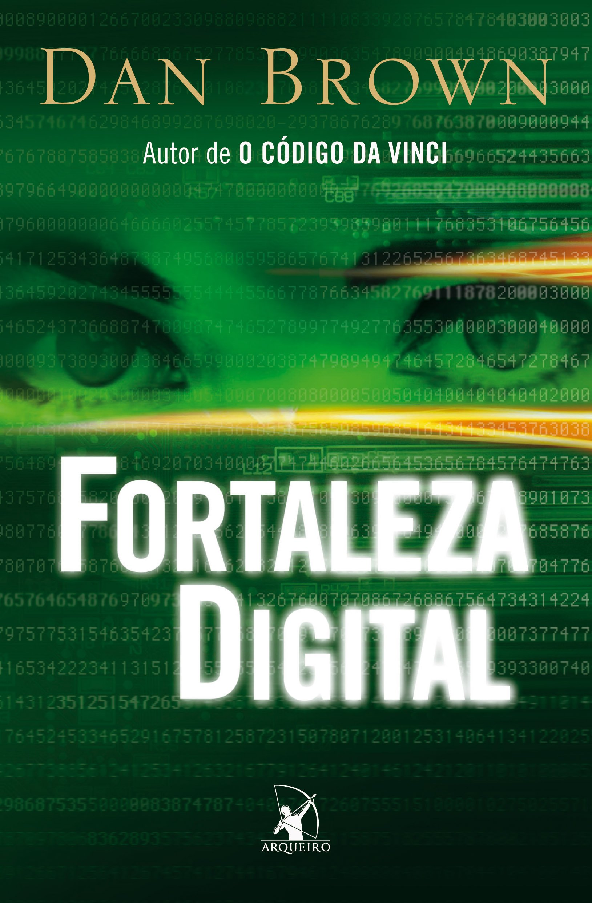

| FORTALEZA DIGITAL | |
|---|---|
|  |
Sinopse: Responsável por monitorar as comunicações de todo o planeta e proteger informações do governo dos Estados Unidos, a ultra-secreta NSA, a Agência de Segurança Nacional americana, investiu às escondidas numa arma revolucionária para combater a ação de grupos terroristas na era da informática. Seu trunfo é o supercomputador TRANSLTR, capaz de decifrar em poucos minutos qualquer mensagem encriptada enviada pela Internet. Quando o infalível TRANSLTR é paralisado por um misterioso código, a agência convoca a chefe do Departamento de Criptografia, a matemática Susan Fletcher, para investigar o que está acontecendo. Susan faz uma descoberta aterradora: a NSA se tornou refém do gênio da computação Ensei Tankado. Demitido da agência por discordar da sua política de desrespeito aos direitos civis, o programador exige que a NSA revele a existência do TRANSLTR à população. Caso contrário, ele divulgará na Internet a fórmula de seu código inquebrável, o fortaleza digital. Tankado morre misteriosamente antes de cumprir sua ameaça, dando início a uma corrida desesperada que se desenrola paralelamente nos corredores do submundo do poder, nos arranha-céus de Tóquio e nas ruas de Sevilha. Enquanto Susan usa seu talento como criptógrafa para tentar desvendar o enigma do fortaleza digital, seu namorado, o especialista em idiomas David Becker, percorre as ruas de Sevilha atrás de um anel deixado por Tankado que pode conter a chave do código. Envolvidos numa trama maquiavélica, Susan e David precisam travar uma batalha de vida ou morte para evitar uma tragédia para a segurança nacional americana e impedir que o equilíbrio de forças no mundo mude para sempre. Lançamento: 20/02/2008 Título original: Digital Fortress Número de páginas: 320 Autor Dan Brown |